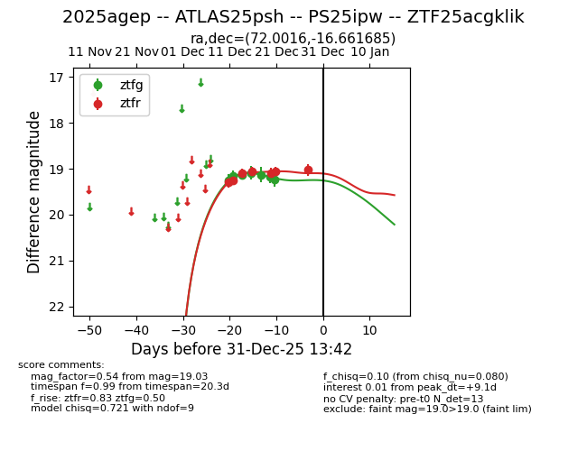
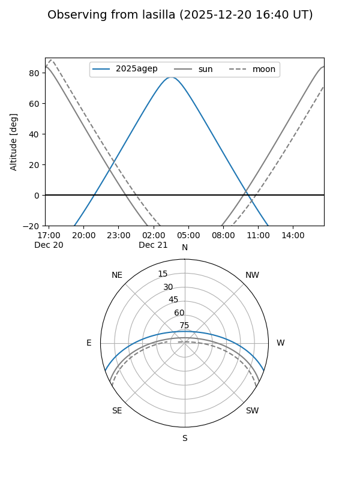
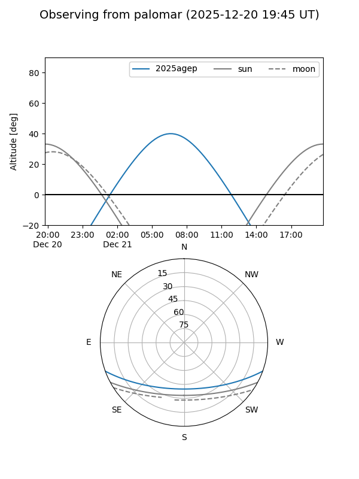

2025agep
Target 2025agep at 2025-12-31 18:00
Aliases and brokers:
FINK: link
Lasair: link
ALeRCE: link
TNS: link
YSE: link
alt names
ZTF25acgklik (ztf,fink_ztf)
2025agep (tns,yse)
ATLAS25psh (atlas)
PS25ipw (panstarrs)
Coordinates:
equatorial (ra, dec) = 72.0016,-16.66168
equatorial (HMS+DMS) = 04:48:00.38,-16:39:42.06
galactic (l, b) = (215.0988,-34.61493)
Flags:
Photometry:
last ztfg=19.24, ztfr=19.03
7 ztfg, 7 ztfr detections
Lightcurve

Visibility


Additional plots